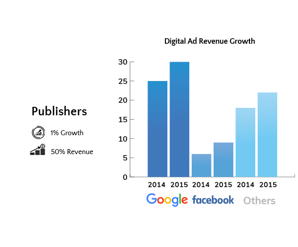
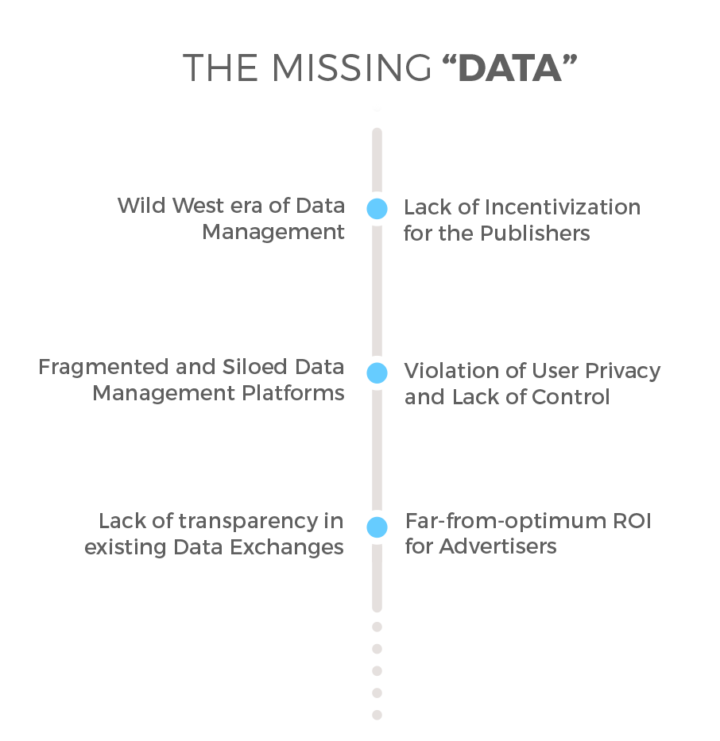
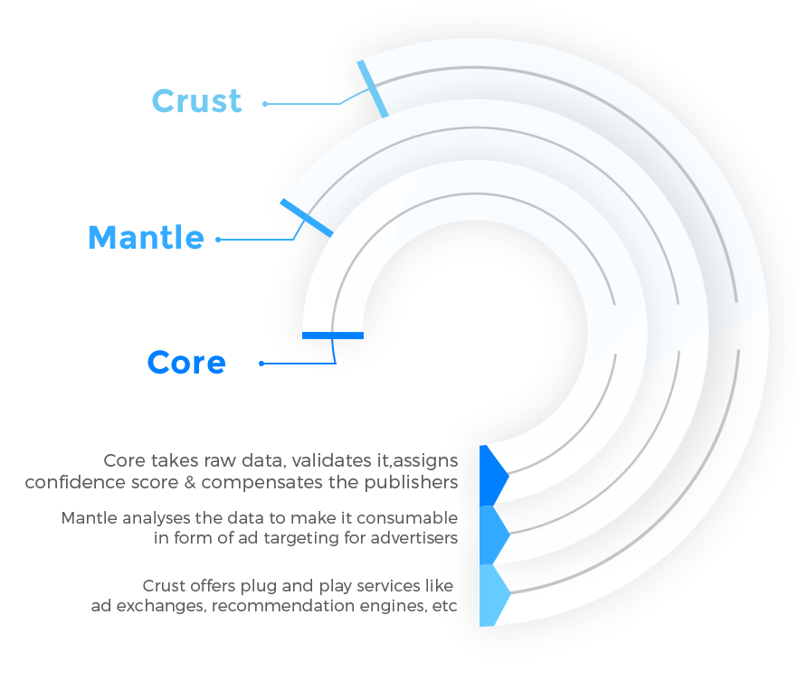
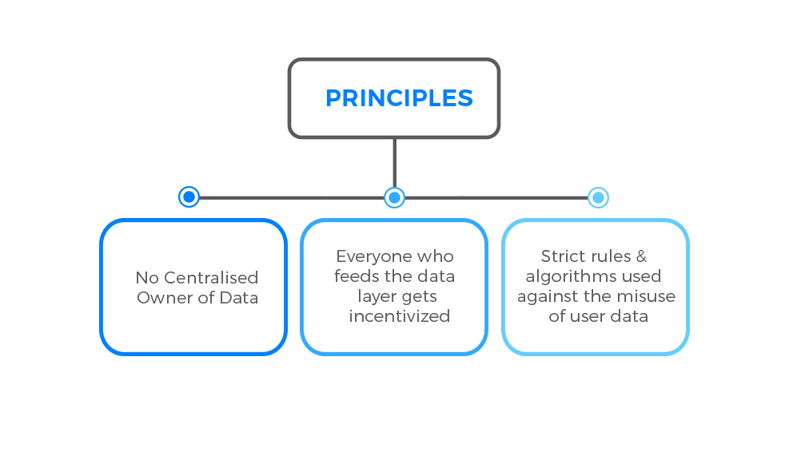
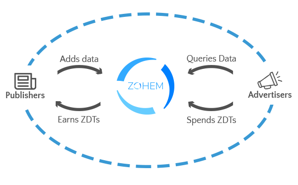

Abstract
“Zohem’s decentralised data exchange layer is going to fundamentally change how the adTech industry works”
Zohem is a blockchain-based user behavior data exchange protocol that aims to resolve the current issues in the AdTech industry and introduce standardization to the exchanges transpiring between the key stakeholders of the industry. Zohem’s Core comprises of a common data layer to which all publishers will be able to contribute data and get rewarded for the same with Zohem Data Tokens (ZDTs). The raw data collected from publishers will be processed and made consumable with Zohem’s analysis mechanisms and tools. Advertisers will be given access to this data in the form of intelligent targeting options in exchange for ZDTs, and they will also be rewarded for verifying the authenticity of the data points they have accessed. All the transactions on the Zohem platform will be backed by Smart Contracts.
The challenge
Free content, that is, news, images, videos, etc. is monetised by the $200 billion digital advertising industry. In the past two decades, online content publishers have been moving from the idea of selling digital space for showing ads to selling the attention of their audience. It is the understanding and capitalisation of this trend which has created goliaths of over $100 Bn like Google & Facebook.
While publishers put in the efforts for creating content, acquiring users, and engaging them in a beautiful experience on their platforms, they together get less than 50% of the generated revenue. The remaining portion of the ad revenue i.e. about $100 Bn goes to Facebook and Google for “successfully” being able to:
Aggregate user behaviour data from multiple publishers.
Process that data to present it in the form of targeting options to advertisers.
Digital ad industry, which relies on heavy customisation of the audiences at whom the ads are targeted, is naturally dependent on availability of vast amounts of accurate user data. It is of no surprise therefore that the GooBook duopoly is hard to beat not because they have all the traffic, but because they know a great deal about the 3.88 Bn people who use the Internet. So, when an advertiser wants to advertise an ad to people who like a particular brand of shoes, the advertiser prefers to use Google Display Network or Facebook Audiences to advertise on particular publishers’ websites. In this process, about 50% of the money is pocketed by our data-rich Google & Facebook. Conservatively speaking, the market value of this data alone is thus 30% of the total ad spends - a whopping $70 Bn. Since a great deal of this data is being generated by publishers themselves, it is only fair to expect that a large part of this $70 Bn should go to them.
DMP’s or Data Management Platforms emerged as a response to provide data to advertisers who are bidding programmatically for digital space through Real Time Bidding (RTB) engines. These DMP’s act as private silos that don’t talk to each other, and each of them is trying to beat the GooBook. The largest DMP (not counting Google and Facebook) has its trackers only on 10% of the websites. The reasons why these DMPs have not been able to gain popularity with other stakeholders in the AdTech industry, and thus challenge the duopoly are:
- Little or no incentivisation to publishers
- Lack of transparency about the data
- Data theft and privacy issues
To be able to serve advertisers better, DMPs need access to a lot of data. For this, they add trackers on publishers’ website, mostly without their buy-in. Paying the publishers is out of question as it would require a lot of capital to begin with. As a consequence, publishers now find it hard to sustain themselves on ad revenue and are being forced to consider paid subscription models, effectively depriving the internet of its biggest and most valued asset; free quality content.
DMPs scarcely reveal any information about how their data has been gathered or how its accuracy has been ascertained. The advertisers have no choice but to trust them anyway, and such an evasive approach is harmful for any industry.
Because of unhealthy data collection methods employed by some DMPs, both users and publishers are at a risk of data theft. While it is the user whose data is being stolen, it is the publisher who suffers a loss of reputation. This further makes publishers wary of using trackers on their website.
The solution
A blockchain-based breakthrough in this adTech space can ensure that publishers are the major gainers of the revenue generated from their data contributions. Because of the raw deal that the adTech industry has given to publishers, they are bound to approach any new development with caution. Therefore, it is important that there are trust-building mechanisms such as smart contracts on data ownership, transactions between advertisers and publishers, etc., in the implementation of this new solution. With a proper data exchange protocol in place, which has the combined user activity data of sufficient small and big publishers, we can have data as accurate & deep as the data with centralised players like Google & Facebook.
At Zohem, we are building a blockchain based decentralised data exchange layer for all the publishers and advertisers globally. Zohem Data Layer will be an open platform supporting APIs, using which publishers would be able to add user data to the platform and get rewarded for the same with ZDTs (Zohem Data Tokens). The data, will be available in the form of user targeting options to advertisers and other stakeholders in exchange for ZDTs, with the help of the same APIs.
Each publisher will be assigned a “trust score” based on their data contribution. The score will be updated dynamically depending on the accuracy of the data received from the publisher. A confidence interval would then be associated with each data point, based on aggregated data received from the publishers. The advertisers would have access to the confidence intervals, along with the data points.
The Zohem Data Layer is backed by the Ethereum blockchain and the code would be open-source to ensure complete transparency in our processes.
Introduction
The ad industry is the economic pillar which supports the existence of a "Free Internet" for users. At the same time, it allows publishers to reap the rewards for their efforts in developing quality content.
Publishers operate in the AdTech space by helping advertisers serve their ads either through direct sales or by using existing Ad Exchange networks. While publishers are overtly dependent on the Google and Facebook duopoly (GooBook) to win advertisers, a majority of these publishers are unhappy and looking for alternatives.
It is interesting to note here, that Facebook and Google are not only "helping" publishers to get advertisers, but they are also the biggest publishing houses in the digital ad industry. An advertiser, who may be interested in getting his ad served on some big news media website, will do so either through RTB (which lacks accurate user data) or through GooBook.
Now, imagine that you are a service provider. A middleman, who provides the same services as you are, although at a much greater scale, approaches you to help in acquiring new clients. At the same time, the middleman maintains that the client accesses your services only through him. Do you see the absurdity of the situation here? The GooBook is having its cake and eating it too. What prevents the client from shifting their entire business to our "honest" middleman, who is a service provider himself?
GooBook has virtually consolidated the industry in its favour, making it "the" go-to place for majority of the advertisers. Now, it can focus on making more money by acting as the "PUBLISHER" to all advertisers and killing competition by being the biggest data warehouse. Publishers' revenues continue to decline as Facebook, Google and other giants dominate the industry and amass the biggest chunks of the profits and leave crumbs for smaller players. No wonder 99% of total growth of the industry last year went to GooBook.
Publishers like NYTimes, Times of India, StoryPick might not have enough data individually, but all of them combined have a data pool which could be processed and organised to create a data layer which is deeper and much more accurate than what exists with Google & Facebook. Recent publisher initiatives like the partnership between Guardian News and Media Group and News Corp etc. to enable better programmatic buying on their websites already show early signs of this trend.
Understanding the Industry & its Problems
AdTech has seen massive adoption of RTB (Real Time Bidding) which lets various publishers & advertisers interoperate and serve more relevant and high- conversion ads. But, the user data exchange needed for the meaningful functioning of RTB lacks both quality data and a standardised protocol. It's like the wild west of "pre-http" days of the internet. Let's understand the problems of AdTech industry in more detail in the next few sections with all this before delving into the solution offered by Zohem:
Publishers have space on their websites to show ads. This space is called ad inventory which is filled either by direct selling of the space by the sales team of the publisher, or through RTB. RTB enables advertisers/DSPs to bid for these ad impressions, creating a competitive landscape. In fact Google & Facebook sell their ads through a process very similar to RTB, which happens internally in their advertising powerhouses.
This process is generally even more complex than explained in the above few steps. Definitions of different components are much more fluid and some organisations offer more than a single piece of the stack, and most of the ad stacks allow plug-and-play of different components with some additional services. Google & Facebook have the complete end-to-end stack in-house.
The inventory bidding protocol provided by openRTB specification has led to strong RTB adoption all across the industry, but the process remains confined to mostly lower value ad inventory, with the higher value ad inventory still being sold through traditional, non-smart ways of direct selling or GooBook duopoly.
The missing "data"
In 2018, RTB will account for over 33% of U.S. digital ad sales, or $18.2 billion up from just $3.1 billion in 2013. Association of National Advertisers (ANA) estimates that as much as 1/4th of RTB impressions lack any form of user data. Many other studies & reports also show that the quality of existing user data is very low. Every DMP is trying to create a walled garden of its own, leading to fragmented data silos. Further, there are no incentivisation mechanisms to encourage publishers to share their data, and the absence of these mechanisms has been responsible for inferior data quality.
DMPs provide data for the users and then allow advertisers (or DSPs) to augment the data using their own data (first party data) and other sources providing second & third party data. With all these different data sets, there are no corresponding mechanisms to establish data authenticity. This also leads to the advertiser rebuying the same data from different parties. While on the opposite front, Google & Facebook lets advertisers target users based on their database of meticulously curated, extremely accurate user data.
Plagued with all these problems, we think that one of biggest challenges being faced by the adtech industry is the lack of a data exchange protocol which lets every publisher and advertiser access a highly accurate set of verifiable user data which will give them high targeting potential, and thus, increased ROI. We strongly believe that user privacy should be emphasized heavily while building this solution.
Wild West era of Data Management
What would have the Internet looked like if Tim Berners Lee would not have invented HTTP? Internet would have been broken and fragmented. Our browsers might not have been the pervasive interfaces that they are today. Each browser may have worked with a different protocol, and for accessing particular websites users may have needed different software. In other words, we might have needed different browsers for doing different things-- accessing documents, email, images, music, videos, etc. Some of this software would be paid, effectively ensuring that by bundling a lot of websites together, users could have been forced to pay anything.
Not having a standard protocol makes it a cumbersome process for developers to create anything as they are tasked with developing their own standards and protocols, for which ultimately someone has to pay. In our case, all the stakeholders of the AdTech industry are suffering because of the lack of a data exchange protocol. Advertisers are paying for the same data again and again, publishers end up giving data without any incentives, and are now almost numb to the data "theft", and users are paying with more bandwidth, and slow load times. Let's delve deeper into some of the problems that exist today:
Fragmented and Siloed Data Management Platforms
User data is not the exclusive domain of Google & Facebook, but other publishers too have a significant amount of quality data, which, if compiled together, can create a rich and competitive data pool. Presently, the situation is somewhat adverse.
On an average, a news website has 34 trackers installed. Thus, the same data is taken by different DMPs over and over again because of lack of communication between these DMPs. Hence, the data with DMPs is fragmented and siloed. Also, DMPs lack comprehensive data coverage. As a consequence of this, advertisers end up rebuying the same data from different DMPs. This has a huge data and experience cost for users as well.
Lack of transparency in existing Data Exchanges
Right now, the advertisers neither know how or where their money is being spent in the process of ad targeting nor do the publishers know about the money originally paid by advertisers towards ad impressions in many cases. Both these parties suffer because of the numerous intermediaries in Adtech industry's chain of operations, and the consequent lack of transparency.
Rob Griffin, who has started a boutique agency called Almighty said, "Agencies are not being transparent, and advertisers don't know where their money is going". "Sometimes, upto 90% of the money advertisers spend gets peeled away as it goes through the supply chain," said Griffin. Many reports have claimed that almost [50% or more] of the total cost is paid out as technology tax and thus, only 20% - 40% of the net digital ad spend ultimately reaches the publisher. There is no transparency regarding the price being paid at every step, or who are the users who actually end up seeing the ads being paid for.
Lack of Incentivization for the Publishers
All the publishers, big & small, have loads of user data with them. But currently there are no methods which let them use this data to offer targeting to advertisers because the data exists with the publishers in isolation. Apart from sharing programs run by some DMPs there are no mechanisms by which these publishers can monetize their data. Also, these systems usually make a one-time payment to the publishers instead of the publisher reaping royalty off the value generated by them.
Tom Chavez on AdExchanger.com says:
"With the right data infrastructure in place, publishers can open up regulation-proof revenue streams worth hundreds of millions of dollars. It would be a shame if some new channel master strip-mined their audience of its emerging data value without giving them their due."
Violation of User Privacy and Lack of Control
General user activity on the Internet is tracked by several trackers (or tracking pixels) installed on a publisher's website by ad networks, DSPs or individual advertisers. Publisher websites on an average have 34 trackers installed. In addition to tracking user data, they use these techniques to gain backdoor access to valuable user information without the knowledge of the publisher. The user doesn't have any control on this either. This data also includes a user's Personally Identifiable Information (PII) such as Name, Email Address, DoB etc.
Far-from-optimum ROI for Advertisers
The major reason for the inequality between the Google and Facebook ecosystems and the others is very simple. It is the lack of user data which does not make the advertising optimally targeted. Also, things such as in-depth user data gathering,and then retargeting, which are aided by intricate mechanisms in the Google and FB ecosystems, are very difficult to do on other networks because of the lack of technical infrastructure and data science backing in the case of small publishers. Fixing these problems within the disjointed realm of small publishers will help increase the ROI on every dollar spent by advertisers in the 200B$ industry.
GooBook duopoly -- Boon or Bane for the publishers?
The benefit of the shortfalls of the AdTech industry is availed by Google and Facebook, which not only continually keep updating their advertising powerhouses with fresh data from multitudinous users, but also help themselves to the user data of the publishers who use their product offerings like Analytics, Like Button, Adwords, etc.
With their products such as Facebook's "Instant Articles" and Google's "Accelerated Mobile Pages", they are further oppressing small publishers by controlling how they track their users and forcing them to sell their ads through them. On top of that, they have intricate mechanisms for enabling effective user targeting, and the rest of industry suffers because of the lack of such technical infrastructure and data science. No wonder, 50% of the market is owned by the duopoly of Google and Facebook, and it enjoys 99% of the annual growth of the AdTech industry. This leaves all the other publishers to grapple for the remaining market share.
Brian Wieser, a Pivotal Research senior analyst commented on Google and Facebook's dominance that, "the average growth rate for every other company in the sector was close to 0 last year."
This problem has arisen because of the hoard of user behaviour data with Google and Facebook which they are able to monetize efficaciously, and their predatory ploys with which they feed on other players and curb any possibility of competition from them. The small publishers are at a great loss in the long run, because advertisers are increasingly turning to Facebook & Google for the convenience of working with them. To save the AdTech industry from the dictatorship of the duopoly, it is imperative that a decentralised data exchange protocol is established, which benefits all the stakeholders of this industry.
Blockchain for Data Management & AdTech 2.0
Blockchain introduced the concept of a decentralised ledger enabling multiple non-trusting parties to exchange anything of value with each other. This ultimately makes it the go-to technology whenever requirements are such that need complete transparency, bookkeeping and ease of transfer of value.
With blockchain, it is possible to ensure that a protocol is established for data management, with sufficient fuel to drive its adoption. The protocol can be proactively developed by a single community, but it will be used by the entire AdTech industry for various purposes such as avoiding redundancies in processes, and realising efficiency and cost gains. Further, establishing a data management protocol will ensure that the system grows in a neutral manner which creates very low-barriers to the entry of new players, as the infrastructure is available to everyone. This would empower publishers and enable them to operate fairly and at par with centralised authorities like Google and Facebook.
Overview of Zohem
Zohem is building a protocol possible today due to blockchain, which aims at alleviating the problems of the AdTech industry. This is being achieved by building a decentralised Data Layer, where publishers can submit the collected data, and in turn can be queried by the advertisers.
It is backed by ZDT (Zohem Data Token), an ERC20 based token to exchange data. The Zohem Data Layer would facilitate in making small pieces of data coming from disparate sources usable with the help of smart algorithms that assign confidence score to each data point, and are discussed in length in the later sections. Every stakeholder (for input and output of data) will be compensated with ZDTs using algorithms which are described in the sections below. This ensures a fair and transparent system, where publishers and advertisers can work with each other.
Zohem's implementation is a tri-layered phenomena:
Core: The core store data of users tied up with the unique fingerprint. The core additionally, contains mechanisms for fraud detection & data authenticity to enable a fair contribution and compensation model for the publishers.
Mantle: The Mantle offers consumable services to the advertisers and other stakeholders to query the data stored in the Core. Mantle includes data processing algorithms that analyse the data stored in the core to come up with meaningful targeting options for the advertisers.
Crust: The crust contains supporting services built and maintained with support of external developers. This enables Zohem to offer plug and play services such as an ad exchange and interest based recommendation algorithms. Other products and services can personalise and augment their own offerings with the additional services being provided via crust. We are talks with developers who are already working on some of these applications.
What is the Zohem Data Layer?
Zohem Data Layer is an API powered by a decentralised data store which will be used to obtain and store data about different user attributes. Zohem data layer will support the following operations:
Inserting Data into the Layer.
Getting data on basis of unique identifiers.
Using the layer for targeting without unique identifier based data.
We have created mechanisms to establish trust in the input sources & data points to maintain the quality of the data layer. These would ensure that only properly authenticated data will be a part of the platform. The mechanisms to establish authenticity and a rough API blueprint are explained below.
The input of data (only after establishing authenticity) will be rewarded with ZDTs which will be calculated on the basis of the value of data. The buy-sell of the user data would be facilitated by the exchange of ZDTs. The data can be accessed with the help of API keys either by querying particular cookie IDs/user-identifiers or by querying user behaviour parameters.
To begin with, in spite of having well researched authenticity establishing mechanisms, we will start with a trusted set of publishers which will make sure that the initial data populating of our Core is of the highest quality, hence setting tight standards for the protocol.
Principles of the Zohem Data Layer
The bigger idea which promotes us to build Zohem is to build a layer that is completely decentralised and removes the problems being faced due to the current centralised systems like Google and Facebook. Zohem would be in the role of a facilitator in the data layer and its open implementation would prevent any single party (including us) from having absolute control over it.
Here are some of the principles of the Zohem Data Layer:
No Centralised Owner of Data: One of the fundamental ideas of Zohem is to establish the data layer in a decentralised manner. The data layer is neither controlled by a single entity, nor is there a single point of failure. Over that, every stakeholder is rewarded based on their contribution to the layer as well as the ecosystem as a whole.
Everyone who feeds the data layer gets incentivized: In the current scenario, with no standardised data exchange model in place, there are no proper incentivization models for publishers to sell their data. The Zohem Data Layer will make sure that everyone who is contributing data will be rewarded on basis of the data inserted into the system.
Strict rules & algorithms used against the misuse of user data: Currently there is rampant data leakage and theft, and there have been numerous incidents of sensitive user data like credit card numbers, passwords being leaked. The completely open infrastructure and the rules governing Zohem would make sure that no sensitive data about users is recorded.
Where does it fit within the current supply chain?
With high quality data on the Zohem Data Layer, we see a lot of ad exchanges using our data layer to fulfil their data needs. We are already in talks with a couple of ad exchanges who will be using our data layer to empower their advertisers to make smarter programmatic ad buying decisions. We also see many more smart platforms like Recommendation Engines being built on top of the Zohem Data Layer.
How will the Zohem Data Token (ZDT) power the Zohem Economy?
ZDT will power all the transactions around data exchange within the Zohem Economy. The publishers would be given ZDTs based on the value of the data that they have contributed, which would be calculated by the Data Inference Engine (in the "Core" of the Zohem Data Layer ) and verified by other publishers. The payouts will be determined on the basis of authenticity of the data and the Trust Scores the publishers have maintained within the system.
As it is the publishers who are providing valuable content to the users, we would like to give them more control over how they would like to monetise their content. Publishers could give users the option of not seeing any ads in exchange for ZDTs. This would be very useful as the classic ad block model of blocking ads had resulted only in diminishing revenues of the publisher. This model would ensure that the publisher is being compensated fairly for his effort, and even the users continue to get free content.
Understanding Zohem's Adoption
As compared to many other ad tech systems built on blockchain which focus on end-to-end solutions, Zohem is a pluggable component which addresses the most dire need of the industry, while working in tandem with the other existing components like RTB, DSP etc.
Zohem can be plugged in existing DMPs and it can power existing ad exchanges immediately which will help us in achieving faster adoption. We have already started tying up with reputed publishers to help us gather at least a billion data points for about a hundred million users within four months of the launch of our platform. Following this, Zohem can be used by the advertisers to improve their ROIs.
To enable faster adoption, we are going to acquire publishers in a small geography area, and thereby advertisers who are interested in the area. This enables us to acquire a very high density of data to serve the advertisers.
User Privacy and Protection
Users will be able to track all the data that the Zohem Data Layer has gathered about them using a special URL accessible on the device which is being tracked. This enables users to rem ove or edit any data being tracked about them. In other words, this gives users complete control over what is happening to the data about them, and whether it is being transacted illegally anywhere.
We are working with experts on our team to make sure that the data layer will be EU Data Privacy laws compliant . This brings us a step closer to a user-centered notion of privacy, rather than existing mechanisms which focus only on the interests of publishers and advertisers.
Zohem's Technology and Algorithms
This section expands and explains all the details of the system from a technical perspective. The inner workings of some of the algorithms and data collection techniques are covered here in depth.
Technology behind Zohem
Our backend database is being written on a distributed blockchain based database called ChainDB. Additionally, to support high query loads we are working on a Cassandra based cache.
Data Collection & Accuracy
Currently Google & Facebook are the biggest data silos with the largest quantity of demographic and behavioural data of users. They use this data internally to improve the quality of ad personalization. Google & Facebook don't face the problem of establishing trust on sources which feed them data about their users as the data is associated with corresponding Google and Facebook accounts.
For Zohem Data layer, any publisher can submit data points and hence accuracy of the data needs to be maintained. Our algorithms described below define how every data point entering the system will be verified using:
TS (Trust Score) of the publisher
CI (Confidence Interval) of every data point
Every publisher will be assigned a score indicative of the overall quality of the data points being added by the publisher. This score serves as a measure of reputation for the publishers and ensures that they have a strong incentive to focus on providing only high quality data.
For every data point, a confidence interval will be associated indicating accuracy of the data point. The largest contributors to this would be the confirmations provided by the publishers and their TS Score.
A uniform method to generate device fingerprints will be used. This can allow seamless addition and querying of the data. Apart from this, Zohem Data Layer would also have support for an ID based mechanism which would allow specific sets of data to be attributed to unique ID's such as email, mobile number et. al. of users. The data would be stored corresponding to the hashed versions of the unique ID. This entire mechanism would ensure privacy of user data, while making Zohem data rich.
Currently the scripts embedded by different AdTech stakeholders like DSP, SSPs and exchanges track a lot of user data-- from web browsing history to information as sensitive as credit card numbers, by putting javascript based key loggers in their tracking scripts embedded on the publishers' websites. Our sources of information are:
JS Tags: Our publishers will be able to embed JS tags on their websites which will ensure transparent tracking of user information. This tracker will send data points from the publishers to Zohem Data Layer.
Mobile SDKs: Mobile SDKs used on publisher mobile applications which will send usage & behavioral data to the Zohem Data Layer.
Every publisher will be incentivized for augmenting this distributed dataset with more data using these mechanisms. Maintaining Trust Scores for the publishers, and confidence intervals for the data points ensure that a decentralised and transparent Zohem will be more reliable than a centralised opaque system.
Maintaining data accuracy
As publishers add data into the Zohem Data Layer, they will be given tokens for successful verification of the data points added by them into the system. The basic process of data collection and verification will look something like given below.
Publisher P, sends a data point D, about a user U at a time T.
A smart contract, SC is formed which guarantees P some tokens on basis of their Trust Score, TS in the platform and our existing confidence - D
Another publisher, Px sends the same data point, D about the same user, U at time Tx and a similar smart contract to SC called SCx is formed which confirms some payout in the form of ZDT to Px
If the values of D sent by P and Px are similar on a fuzzy scale, SC would get executed. The SCx will be executed when the data point is confirmed by another publisher.
In simple words, when a publishers adds data to Zohem Data Layer, the publisher gets paid as soon as other publisher confirm the authenticity of the data. Use of smart contracts ensure that the process can be executed without any human intervention.
Initial Trust Score of Publishers
Initially the trust scores of publishers will be derived from the pre-existing PageRanks of their respective websites. The idea behind this is to base our trust in the publishers on basis of a system which has already vetted out the same network rigorously.
TS = PR * 0.1
Where,
- TS is the Trust Score. Max TS can be 1.
- PR is the page rank from 0 to 10
Deciding the number of ZDTs to be distributed for a correct data point
The confidence interval for any data confirmation by a publisher will be determined by the following equation::
CI = (1-C) . TS . SD
Where,
- CI is amount from which confidence needs to be increased.
- C is the current confidence about the given data point. Max C ever can be 1.
- TS is the Trust Score
- SD is a static value to ensure low rate of increase by stepping down the whole score.
The total confidence of our system around a data point cannot be more than 1 at any point of time. Consider 1 as a representative of the total pie. Now the confidence which needs to be increased has to be in accordance with the remaining pie. If the confidence score of a data point is already 0.5, we would only want the remaining score to increase on basis of the remaining pie instead of the total size of the pie. The number of ZDTs distributed to the user for this data would also be related to CI.
ZDT ∝ CI
Where,
- ZDT is the amount of tokens given to the user.
- CI is the confidence to be increased, for which calculations have been included in the above paragraphs.
Other Applications of the Zohem Data Layer
The major focus of Zohem is on the blockchain because that’s how we plan to implement a completely different level of transparency in the ad industry. But the existence of a data layer with data as rich as Zohem would have many other use cases than just powering the ads of the ad tech industry. It can fundamentally help us build smarter experiences for the users as a whole.
A blockchain based technology would help to incentivize publishers from various kinds of revenue streams which never really existed because now the decentralized system would let the publishers use their small data silos as one big world-dominating silo of data.
Zohem as the backbone of Recommendation Engines
We know how recommendation engines have revolutionized the world with better discovery leading to increased revenues. Zohem Data Layer can be used to build a recommendation engine which can help many companies or apps or websites to drive up their engagement with their users even without having access to a google like data layer and will also help monetize the data of the small publishers. Imagine how many apps would suddenly get much more useful because of the data layer. For instance, your recipe apps would become more useful because of dietary preferences, productivity apps because of daily habits etc.
Content Personalisation
The content all over the web can be personalised according to the end user. Every website can subscribe to a service to get some key metrics about a user like his Age, Gender, Dietary Preferences, Location, Travel Interests etc. to have some standard rule based personalisation.
Zohem’s Initial Coin Offering (ICO)
Token Mechanics
We aim to raise a total amount of 22M USD during the ICO period which includes both the pre-sale and the ICO. At the time of writing of the paper this is close to 73,333 Ethers or 5110 BTC).
Total Number of Tokens: 8 Billion (8,000,000,000)
Token Value: 1 USD = 100 ZDT
We would be raising 2M USD during the pre-sale period. The rest 20M USD of the target will be raised during the ICO.
Usage of Tokens

Publisher pool will be used as a fuel to acquire data or in other words to reward the publishers to seed data Zohem Data Layer before we can reach an inflection point where meaningful exchange will start taking place. The usage of these tokens will be strictly controlled by the Zohem smart contract.
The tokens for Zohem team will be vested over 3 years and discharged every year at the rate of 33.33% per year.
The tokens used for development will be controlled via an Escrow that ensures that fair and transparent process of sale of those tokens and their development. The rate of release of these tokens cannot be greater than 1% every week.
Procedure to earn tokens reserved for bounty program will be updated on Zohem’s official website.
The ICO and Pre-Sale tokens will be distributed to the investors within 15 days from the end of the ICO period.
Usage of Sale Proceeds
Zohem Development - We have a team of 7 Engineers who are working on this, and we are hiring for AdTech and Blockchain experts who can work on this with us. This allows us to develop the protocol and build the data layer and includes all the design and development costs.
Administration - Legal and Compliance - To follow the compliances, standards and abide by certain regulations that are demanded by the Law.
Marketing and Business Development - Our marketing team has specific tasks such as branding, PR, outreach et.al. This also includes awareness campaigns designed around data privacy, and educating publishers about data theft.
Operational Costs - This will take care of the day to day costs of Zohem.
Contingency - This amount will be used to meet any unforeseen costs, if any.
Token Flow & Usage
The flow of Zohem Data Tokens and their use within the ecosystem is expressed as:
Within the Zohem economy, the ZDT will be used to internally push and pull data from the platform. The algos of authenticity etc. will decide the amount of ZDT being distributed to the involved parties.
The pushing of data in the platform (with approval at a later stage) would result in giving away from ZDTs to the publishers. The ZDTs will only be given once the data is approved by other publishers using the approval mechanisms described in the Data Authenticity sections
The consumers who would be requesting data will be giving away ZDT to the publishers.Traffic normalization such that the ZDT value is relative to the overall value of an AP's audience and traffic. For example, scale has to be normalized so that larger retail destinations are indexed properly against smaller, but potentially more valuable traffic. (The whole idea is that publishers will be compensated in a fair manner according to the data they contribute instead of just plain standard arithmetic rules.)
Fund Keepers
The entirety of the investments raised during the Pre-sale as well as the ICO will be kept in multisig escrow wallets. The reason behind following this process is to give our investors the confidence that their contributions are kept in safe hands, and are not controlled only by Zohem. This allows us to bring credibility to the contributors and have clarity in our financials.
Founders
Nikunj Jain, Co-founder & CEO
Nikunj is a prominent serial entrepreneur and angel investor. His 1st company was an android gaming studio that got over 150Mn downloads. His 2nd was a celebrity Q&A video social network for which he raised 2.6M USD from Venture capitalists including Matrix Partners (early investors in Apple with 2.4Bn USD AUM). Having spent last 7 years in running ad-monetized businesses lead him to developing a deeper understanding of Ad-tech industry and challenges faced by publishers. He also runs LedgerFund, a 10M USD crypto Hedge Fund.
Ayush Varshney, Co-founder & CTO
Ayush, a geek at heart, who cofounded his first company, bluegape, in college, which went onto become India's most popular blogging platform that supported 100M monthly unique visitors. Ayush's second product, murmur was funded by google and was part of 1st batch of Google's Launchpad Accelerator. Ayush has been contributing to blockchain projects for last 20 months.
Sumit Gupta, Co-founder & COO
Sumit, a serial entrepreneur, raised capital from Marquee Institutional Investors and sold his first company, Grownout, an AI and social profiling based referral recruitment platform. Sumit then started India's first ad supported internet radio platform for retail outlets. Sumit has been secretly mining bitcoins in his fathers warehouse since 2013.